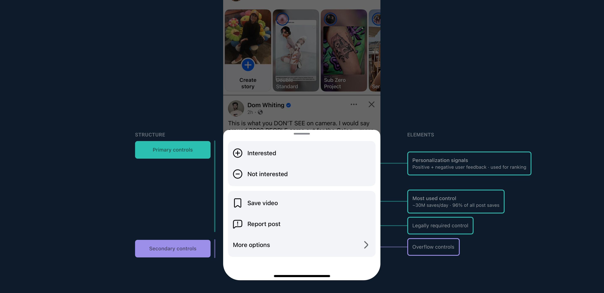

SIGNAL & RANKING controls · Facebook · trust & safety
Less menu.
More signal.
Facebook's 3-dot menu is how billions of users tell Feed what they do and don't want. 44% of user feedback called it confusing. I led a four-year-stalled redesign from 14+ fragmented actions to four core controls, while protecting the ranking and integrity signals the product depended on.
Simplified 14+ core controls down to 4 above the fold, shipped 1:1 as designed.
100% global rollout to 3B+ users.
+20% signal-quality improvement negative user feedback from the UI alone.
Adapted mid-project to a leadership requested Meta AI integration without losing the simplification goal.
Role
Lead Product Designer
SCOPE
Feed · Ranking · Integrity · AI
PARTNERS
Design, Eng, DS, PM across multiple orgs
Impact
3B+
Users reached
14→4
Controls simplified
4 mo
Idea to ship
+20%
Signal quality (NUF)
10+
XFN teams aligned
Business impact of simpler controls: Core Session Cap projected +0.35% and DAU +0.17%, on the surface 3 billion people touch most.
Short-term, mid-term, and the north star: one evolution, sequenced so it could ship to 3 billion users without breaking a single habit.
3-dot menu · roadmap
01 · THE BET
A simpler menu could produce stronger signals, if the ranking stack changed with it.
But simplification was not a cosmetic cleanup. Every control we moved or consolidated represented a signal that integrity and ranking systems had learned to use. Cut carelessly, the redesign could make Feed worse for billions of users.
Over the years, the menu had grown into a 14+ item inventory with no clear hierarchy. People couldn't predict what they would find, redundant actions fragmented intent, and legacy controls produced noisy inputs for ranking.
02 · THE PRODUCT CHANGE
From an inventory of features to a hierarchy of intent.
High-value, content-level controls stay immediately available. Lower-priority actions move behind More options; surface-level controls remain available in centralized settings.
BEFORE
Fourteen controls deep
14+ actions, overlapping meanings, no predictable hierarchy.
AFTER
Fourteen collapse into four
Four intent-rich controls above the fold, with everything else rehomed.
03 · THE DECISION SYSTEM
I gave teams a shared way to decide what deserved immediate access.
The breakthrough was not persuading teams to give up controls. It was replacing feature-by-feature debate with a product principle everyone could evaluate.
{{ c.num }}
{{ c.title }}
{{ c.body }}
Specific controls can still appear contextually when they are highly relevant. The 3-dot menu becomes the predictable home for content-level actions, not the home for every action.
The two directions side by side, with the tradeoffs named. Radical was the recommendation, and the version leadership aligned on.
Options · decision artifact
04 · THE TURNING POINT
Early projections showed the clean design could create severe signal loss.
A cross-org deep dive put multiple Feed and trust-and-safety goals at risk. Instead of treating that as a retreat, I partnered with engineering and data science to make the risks explicit, testable, and reversible.
Risk
Why it mattered
Mitigation
{{ r.risk }}
{{ r.why }}
{{ r.fix }}
The north star
Every control mapped to a job, and a tier.

Each control mapped to a job and a tier, the structure that decides what belongs in the menu and what lives one layer down.
ALIGNMENT · STRUCTURE & ELEMENTS
05 · HOW WE LEARNED
We separated the variables before combining them.
To understand whether simplification itself moved behavior, we tested the UI independently from animation and the AI layer, then tested the combined experience.
Test 1
Simplification
Did hierarchy alone increase use of core controls?
+
Test 2
Motion
Could animation improve discovery without adding clutter?
+
Test 3
AI intent layer
Could natural intent increase adoption without hurting engagement?
Core hypothesis
Fewer manual choices + an intent-based AI layer would deliver a clearer experience and higher-quality signals than either approach alone.
The Meta AI layer
Discovery, without unwinding the work.
A generated summary and sourced links, opening from the top of the menu, added as a net-new surface while the four core controls stayed intact.
The same structure with the Meta AI discovery layer folded in: a net-new surface at the top, the four core controls left untouched.
AI layer · structure
06 · THE OUTCOME
A cleaner experience landed globally without destabilizing Feed.
14→4
Controls, with nothing essential lost
+20%
NUF usage from the simplified UI alone
4 mo
From stalled initiative to global ship
3B+
People on the new menu, shipped 1:1
Shipped 1:1 with the spec10+ XFN teams alignedReels piloted a consolidated version off this work
07 · BEYOND LAUNCH
I designed the rules that keep the menu from becoming cluttered again.
The launch solved today's interface. The governance model protects tomorrow's: placement principles, a blocklist for redundant and promotional actions, contextual-entry guidance, and an approval path for future additions.
THE RULE
Every action needs a home. That home is rarely the 3-dot menu.
Why it mattered
The visible change was a shorter menu. The real change was a clearer conversation between people and Feed.
By consolidating duplicative controls into a smaller set of legible intents, we made it easier for people to shape what they see, and easier for ranking systems to understand what they mean.